Contents
Example Code for Secure, Distributed Matrix Multiplication.
This code goes through the calculations of multiplying 2 $ 4 \times 4 $ matrices, each split into submatrices of size 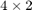 each. All calculations are in the finite field 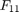. There are 4 workers to distribute among, and we specify 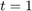.
% Formatting options showOn = true; clc; format compact %making matrix A a1 = [[1,2];[2,1]]; a2 = a1 + fliplr(eye(2)); a3 = a2 + fliplr(eye(2)); a4 = a3 + fliplr(eye(2)); mat_A = [ [a1,a2];[a3,a4] ]; % matrix B B = eye(4); % other parameters : N = 4; t = 1; m = 2; z = 4; p = 11;
Stage 1: polynomial codes of A and B
We construct the direct polynomial code to share A and B to the worker nodes. Here, the 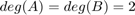, as each code is of degree 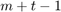.
A = @(x) [a1;a3] + [a2;a4]*x + [[3,2];[1,4];[4,2];[2,3]]*x^2; B = @(x) B(:,1:2) + B(:,3:4)*x + [[5,6];[1,3];[2,4];[1,2]]*x^2; % each worker `n` receives A(n) and B(n) for i=1:4 share_A(:,:,i) = mod( A(i), p); share_B(:,:,i) = mod( B(i), p); end if (showOn == true) fprintf("Shares of A:\n"); disp (share_A) fprintf("\nShares of B:\n"); disp (share_B) end
Shares of A:
(:,:,1) =
5 7
6 6
6 0
0 5
(:,:,2) =
4 5
1 8
8 0
0 4
(:,:,3) =
9 7
9 7
7 4
4 9
(:,:,4) =
9 2
8 3
3 1
1 9
Shares of B:
(:,:,1) =
6 6
...Stage 2(A): subsharing A
Each worker node now sub-shares their share using a direct code again, of degree $ m + t - 1 $ again. This will later enable each worker to compute subshares of the desired product 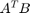.
A_1 = @(x) share_A(:,:,1) + [[9,7];[10,2];[2,4];[0,7]]*x + ... [[0,0];[0,6];[2,9];[11,2];]*(x^2); A_2 = @(x) share_A(:,:,2) + [[7,6];[7,3];[3,10];[4,3]]*x + ... [[3,4];[2,11];[3,5];[5,3];]*(x^2); A_3 = @(x) share_A(:,:,3) + [[10,3];[11,5];[5,7];[2,3]]*x + ... [[7,4];[8,4];[3,5];[2,6];]*(x^2); A_4 = @(x) share_A(:,:,4) + [[1,0];[3,9];[9,6];[1,7]]*x + ... [[3,6];[6,3];[0,6];[7,7];]*(x^2); subshare_poly_A = {A_1, A_2, A_3, A_4}; % Computing each worker's subshare. i.e. each worker `j` receives $A_i(j)$, % $\forall i \in [N]$. for n=1:4 for ndash = 1:4 subshares_A(:,:,n,ndash) = mod ( subshare_poly_A{n}(ndash), p); end end if (showOn == true) fprintf("Subshares of A:\n"); disp (subshares_A) end
Subshares of A:
(:,:,1,1) =
3 3
5 3
10 2
0 3
(:,:,2,1) =
3 4
10 0
3 4
9 10
(:,:,3,1) =
4 3
6 5
4 5
8 7
(:,:,4,1) =
2 8
6 4
1 2
9 1
(:,:,1,2) =
1 10
4 1
7 0
...Stage 2(B): subsharing B
Each worker now subshares B using two codes. Both of these are designed so that they can be locally recombined by each worker to form the actual subshare of B. In our example, each worker `n` sends out 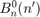 and 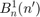 to worker n'. Then, worker n' can recombine their shares as 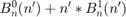 i.e. compute shares of 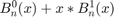.
B_10 = @(x) share_B(1:2,:,1) + [[3,7];[5,0]]*x + [[5,4];[0,8]]*(x^2);
B_11 = @(x) share_B(3:4,:,1) + [[8,8];[6,8]]*x;
B_20 = @(x) share_B(1:2,:,2) + [[1,10];[7,8]]*x + [[3,6];[5,0]]*(x^2);
B_21 = @(x) share_B(3:4,:,2) + [[2,8];[10,5]]*x;
B_30 = @(x) share_B(1:2,:,3) + [[7,5];[3,7]]*x + [[3,7];[4,3]]*(x^2);
B_31 = @(x) share_B(3:4,:,3) + [[10,9];[0,4]]*x;
B_40 = @(x) share_B(1:2,:,4) + [[9,7];[3,1]]*x + [[5,2];[4,2]]*(x^2);
B_41 = @(x) share_B(3:4,:,4) + [[7,10];[2,10]]*x;
subshare_poly_B = { {B_10, B_11}, {B_20,B_21}, {B_30, B_31}, {B_40,B_41} };
% Each worker n' receives the two shares of $B_{n}^0(n')$ and $ B_{n}^1(n')$
% from worker n.
for n = 1:4
for j = 1:2
for ndash = 1:4
intermediate_subshares_B(:,:,n,j,ndash) = ...
mod(subshare_poly_B{n}{j}(ndash),p);
end
end
end
if (showOn == true)
fprintf("Received intermediate subshares of B:\n");
disp (intermediate_subshares_B)
end
% Each worker calculates his subshare of B i.e. B_n(ndash)
% Verified.
subshares_B = zeros(m,m,N,N);
for n=1:4
for ndash = 1:4
subshares_B(:,:,n,ndash) = mod(...
intermediate_subshares_B(:,:,n,1,ndash) ...
+ ndash * intermediate_subshares_B(:,:,n,2,ndash), ...
p);
end
end
if (showOn == true)
fprintf("Recombined subshares of B_n(x), locally computed:\n");
disp(subshares_B)
end
Received intermediate subshares of B:
(:,:,1,1,1) =
3 6
6 1
(:,:,2,1,1) =
3 7
5 10
(:,:,3,1,1) =
1 0
5 5
(:,:,4,1,1) =
7 6
1 8
(:,:,1,2,1) =
0 1
7 0
(:,:,2,2,1) =
1 2
3 4
(:,:,3,2,1) =
9 1
9 3
(:,:,4,2,1) =
10 8
7 2
...Stage 2(B)(hidden): Each party `n` also forms B_n(x).
This is the polynomial that from which the shares in recom_subshares_B are created. Each worker `n` has the polynomials to do so Here, we need B_n(x) for Stage 3 i.e. to calculate the O polynomials. But, this also helps us verify that the previous stage is correct.
B_1 = @(x) B_10(x) + B_11(x)*x; B_2 = @(x) B_20(x) + B_21(x)*x; B_3 = @(x) B_30(x) + B_31(x)*x; B_4 = @(x) B_40(x) + B_41(x)*x; if (showOn == true) syms x; assume(x, 'real'); fprintf ("B_n(x) for n = 1,2,3,4: \n \n"); disp(expand(B_1(x))); disp( expand(B_2(x)) ); disp(expand(B_4(x))); disp(expand(B_4(x))); end poly_subshare_B = {B_1, B_2, B_3, B_4}; for n = 1:4 for ndash = 1:4 indep_calc_subshare_B(:,:,n,ndash) = mod( ... poly_subshare_B{n}(ndash), p); end end % Verified against subshares_B. % indep_calc_subshare_B - subshares_B
B_n(x) for n = 1,2,3,4: [13*x^2 + 6*x + 6, 12*x^2 + 11*x + 6] [ 6*x^2 + 6*x + 1, 16*x^2 + 3*x + 4] [5*x^2 + 11*x + 10, 14*x^2 + 15*x + 2] [15*x^2 + 11*x + 4, 5*x^2 + 18*x + 2] [12*x^2 + 12*x + 4, 12*x^2 + 16*x + 8] [ 6*x^2 + 8*x + 5, 12*x^2 + 4*x + 5] [12*x^2 + 12*x + 4, 12*x^2 + 16*x + 8] [ 6*x^2 + 8*x + 5, 12*x^2 + 4*x + 5]
Stage 3: Computing on subshares
Each worker n can compute the product of the subsharing polynomials they used. Locally, each worker n' can compute the product of the subshares they received, and both are guaranteed to be the same. We verify that that is indeed the case.
syms x; assume(x, 'real'); AB_1 = expand(A_1(x)*B_1(x)'); AB_2 = expand(A_2(x)*B_2(x)'); AB_3 = expand(A_3(x)*B_3(x)'); AB_4 = expand(A_4(x)*B_4(x)'); poly_AB = {AB_1, AB_2, AB_3, AB_4}; % taking each coefficients modulo `p` for n=1:4 % for each AB_n for i = 1:4 % each row of the code for j = 1:2 % each column of code poly_AB{n}(i,j) = poly2sym( mod(coeffs(poly_AB{n}(i,j)), p) ); end end % display if appropriate setting is true end if(showOn == true) fprintf ("Subsharing polynomial of AB' held by %d\n", n); disp ( poly_AB ); end % Constructing the local shares of AB' at each worker. % Each worker now computes the local product of the shares they have. subshares_AB = zeros(4,2,4,4); for n=1:4 for ndash = 1:4 % x=ndash; % evaluate the coming polynomial at x=n' subshares_AB(:,:,n,ndash) = mod( ... subshares_A(:,:,n,ndash) * subshares_B(:,:,n,ndash)',p); end end % Constructing the O polynomials. Hardcoded for now. These are to help us % reduce the degree of the underlying polynomial of the product of % subshares we computed above. Each subshare of $A^T B$ lies on a degree % $2(m+t-1)$ polynomial, and we must reduce it to $m+t-1$. (Here, 2). % Each $O^(n)_k (x) = \Sigma_{l=0}^{t-1} R_{k,l} + x^t (D^(n)_{2k} - % R_{k+1,t-1})$. This way, all terms of degree higher than $m+t-1$ are % cancelled out. O_11 = @(x) [[9,7];[10,2];[2,4];[0,7]] + [[0,0];[6,8];[3,6];[8,9]]*x; O_10 = @(x) [[0,0];[0,6];[2,9];[0,2]] + [[8,4];[10,4];[4,6];[9,3]]*x; O_21 = @(x) [[8,8];[9,2];[9,8];[5,1]] + [[6,4];[4,9];[3,10];[8,8]]*x; O_20 = @(x) [[4,8];[1,4];[2,0];[10,1]] + [[6,1];[0,0];[8,2];[2,5]]*x; O_31 = @(x) [[5,3];[5,6];[9,5];[9,8]] + [[0,2];[0,2];[10,10];[10,2]]*x; O_30 = @(x) [[8,8];[9,2];[4,2];[8,6]] + [[1,2];[1,9];[2,3];[0,9]]*x; O_41 = @(x) [[0,9];[4,3];[7,6];[3,8]] + [[8,2];[1,0];[9,9];[10,6]]*x; O_40 = @(x) [[10,2];[0,3];[7,10];[2,3]] + [[1,10];[4,1];[8,9];[4,10]]*x; poly_O = {{O_11,O_10},{O_21,O_20},{O_31,O_30},{O_41,O_40}}; subshare_O = zeros(4,2,4,2,4); for n = 1:4 for j = 1:2 for ndash = 1:4 subshare_O(:,:,n,j,ndash) = mod ( poly_O{n}{j}(ndash), p ); end end end if (showOn == true) fprintf ("Each worker now receives the O shares: \n\n"); disp ( subshare_O ); end % Each worker can now calculate their subshare of C, % using the shares they receieved of A_n, B_n and the Os. syms x; assume(x,'real'); for n=1:4 for ndash=1:4 x = ndash; subshares_C(:,:,n,ndash) = mod( subs(poly_AB{n}) ... %subshares_AB(:,:,n,ndash) ... - (ndash^2) * subshare_O(:,:,n,2,ndash) ... - (ndash^3)*subshare_O(:,:,n,1,ndash) ... ,p); end end if (showOn == true) fprintf ("Each worker's subshares of C:\n"); subshares_C end
Subsharing polynomial of AB' held by 4
{4×2 sym} {4×2 sym} {4×2 sym} {4×2 sym}
Each worker now receives the O shares:
(:,:,1,1,1) =
9 7
5 10
5 10
8 5
(:,:,2,1,1) =
3 1
2 0
1 7
2 9
(:,:,3,1,1) =
5 5
5 8
8 4
8 10
(:,:,4,1,1) =
8 0
5 3
5 4
2 3
(:,:,1,2,1) =
...Stage(3)(Hidden)
Now we can form the polynomial forms of the subshares of C, given by the formula A_n(x)B_n(x) - x^m (O^n_0 + xO^n_1) Theoretically, each worker should have subshare_poly_C(:,:,n)(ndash), i.e. share of a degree 2 polynomial. Verified.
for n=1:4 for ndash = 1:4 x = ndash; indep_calc_subshare_AB (:,:,n,ndash) = mod( ... subs( poly_AB{n}), p); end end syms x; assume(x,'real'); for n=1:4 subshare_poly_C(:,:,n) = expand ( poly_AB{n} - ... x^2 * ( poly_O{n}{2}(x) + x*poly_O{n}{1}(x) ) ); end if ( showOn == true ) fprintf ("Polynomial form of the shares of C at each worker:\n"); subshare_poly_C end for n=1:4 for ndash = 1:4 x = ndash; eval_C(:,:,n,ndash) = mod( subs(subshare_poly_C(:,:,n)), p ); end end syms x; assume(x, 'real');
Polynomial form of the shares of C at each worker: subshare_poly_C(:,:,1) = [- 11*x^3 + 5*x^2 + 5*x + 3, - 11*x^3 + 8*x + 1] [ - 11*x^3 + 4*x^2 + 6, 8 - 4*x^2] [ 9*x + 2, x^2 + 5*x + 2] [ 6*x^2 + 7*x + 2, 8*x^2 + 8*x + 10] subshare_poly_C(:,:,2) = [ - 11*x^3 + 5*x^2 + 3*x + 5, - 4*x^2 + 9*x + 10] [ 5*x^2 + 10, 3*x^2 + 10*x + 8] [- 11*x^3 + 8*x^2 + 10*x + 8, 3*x^2 + 9*x + 4] [ - 7*x^2 + 8*x + 1, 8*x + 2] subshare_poly_C(:,:,3) = [ - 4*x^2 + 10*x + 1, - 6*x^2 + 4*x + 1] [ - 3*x^2 + 6*x + 3, - 11*x^3 + x + 5] [- 11*x^3 - 4*x^2 + 4*x + 9, 4*x^2 + 3*x + 3] [ 2*x^2 + 2*x + 1, - 11*x^3 + 4*x^2 + x + 6] subshare_poly_C(:,:,4) = [ - 4*x^2 + x + 9, - 2*x^4 - 11*x^3 + 8*x^2 + 10*x + 2] [ 8*x^2 + 9, - x^2 + 10*x + 6] [- 11*x^3 - 4*x^2 + x + 6, - 11*x^3 - 8*x^2 + 7*x + 6] [ 7*x^2 + 6*x + 3, - 11*x^3 - 3*x^2 + 9*x + 5]
Stage 4: The recombination at the master node.
Each node recombines their subshares of 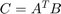 using coefficients 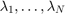. They send these shares to the master node, who will interpolate on them to construct the final product.
considered_workers = 1:3; m = fliplr(vander(considered_workers)); minv = floor(mod(inv(m) * det(m),p)); dinv = find ( mod((1:p)*det(m), p) == 1); lambda = mod ( dinv * minv (1,:), p); share_C = zeros(4,2,length(considered_workers)); for n=considered_workers for ndash = considered_workers share_C(:,:,n) = mod( share_C(:,:,n) + ... lambda(ndash)*subshares_C(:,:,n,ndash), p); end end if ( showOn == true ) fprintf ("Each worker has the share of C: \n"); disp (share_C); end c_0 = zeros(4,2); c_1 = zeros(4,2); c_2 = zeros(4,2); for i=considered_workers for j=1:m temp = mod( ... dinv * m * [share_C(i,j,1), share_C(i,j,2), share_C(i,j,3)]'... ,p); c_o(i,j) = temp(1); c_1(i,j) = temp(2); c_2(i,j) = temp(3); end end C = [c_0, c_1] % NOTES: try: syms y; assume(y,'real'); expand(A_1(y)*B_1(y)')
Each worker has the share of C:
(:,:,1) =
3 1
6 8
2 2
2 10
(:,:,2) =
5 10
10 8
8 4
1 2
(:,:,3) =
1 1
3 5
9 3
1 6
C =
0 0 3 0
0 0 8 0
0 0 5 0
0 0 0 0